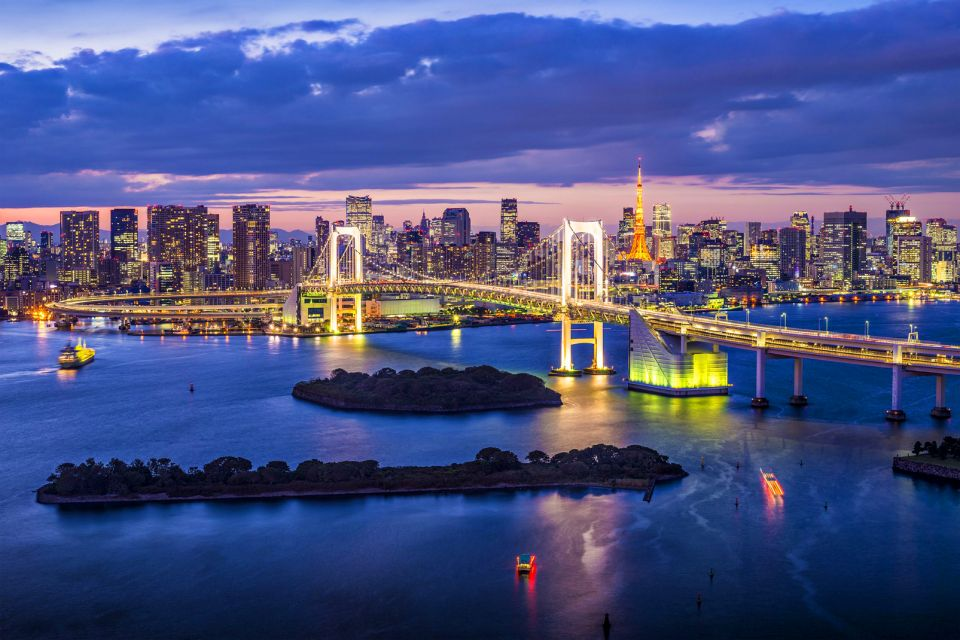
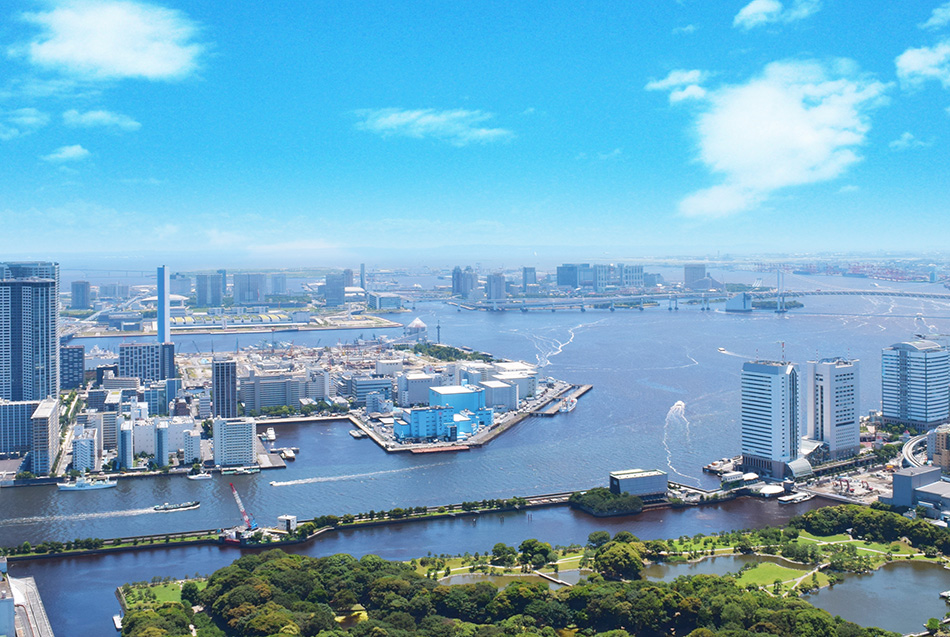
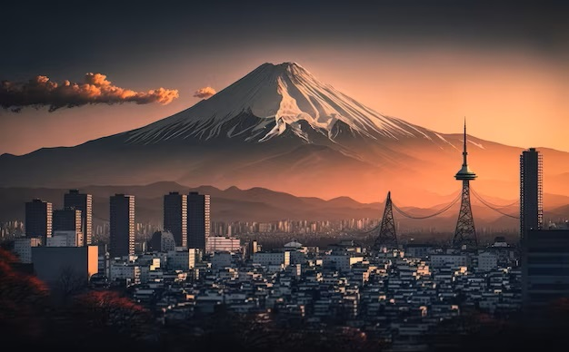
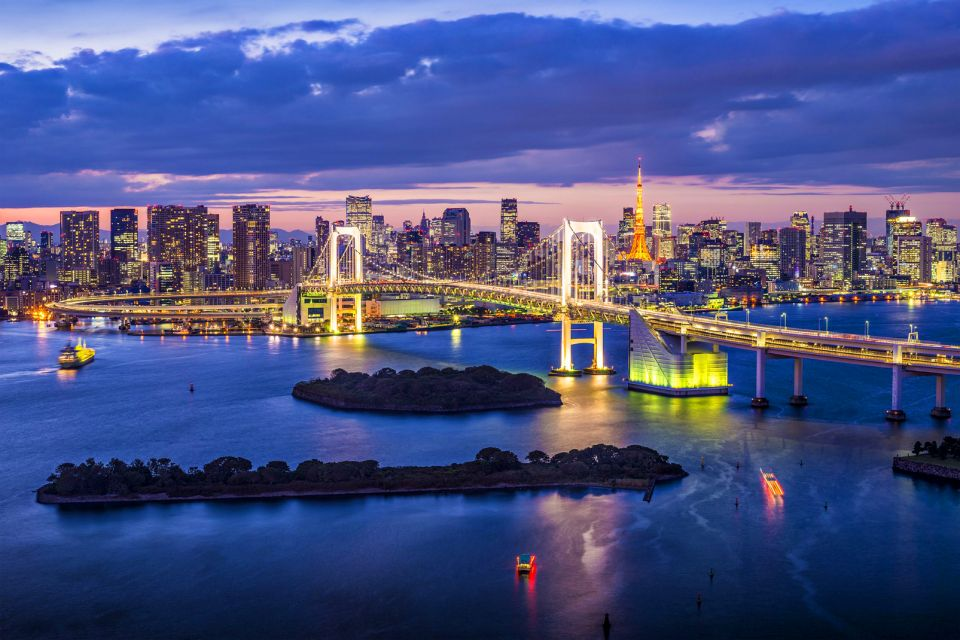
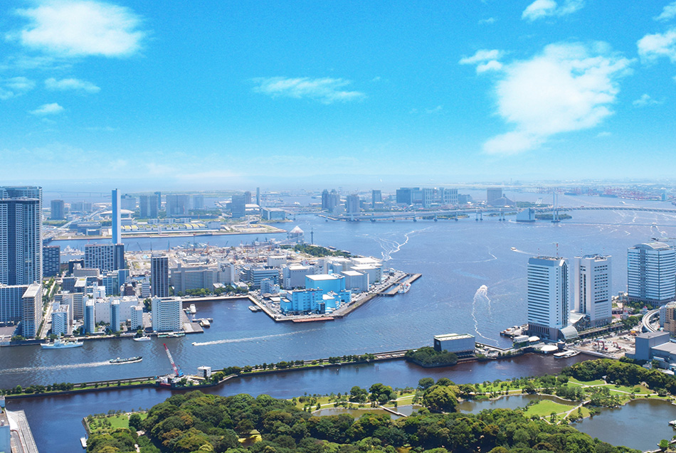
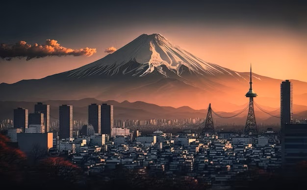

Tokyo
Hôtel Capylpso ⭐️⭐️⭐️⭐️ ★
1 week
Bienvenue à notre hôtel, un havre de confort et d'élégance au cœur de Tokyo. Que vous soyez en voyage d'affaires ou en vacances, nous vous offrons un séjour inoubliable, avec des chambres luxueuses, des installations modernes et un service attentionné. Découvrez l'harmonie entre le charme de notre établissement et l'effervescence de cette magnifique destination
Choose a date 150 €